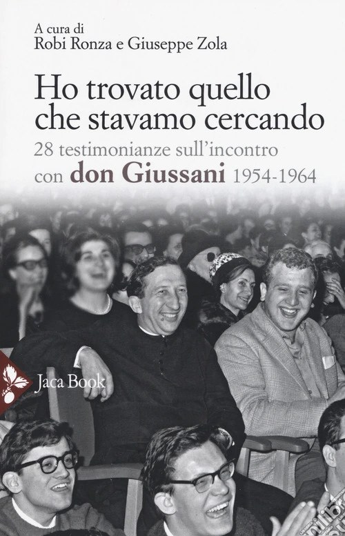
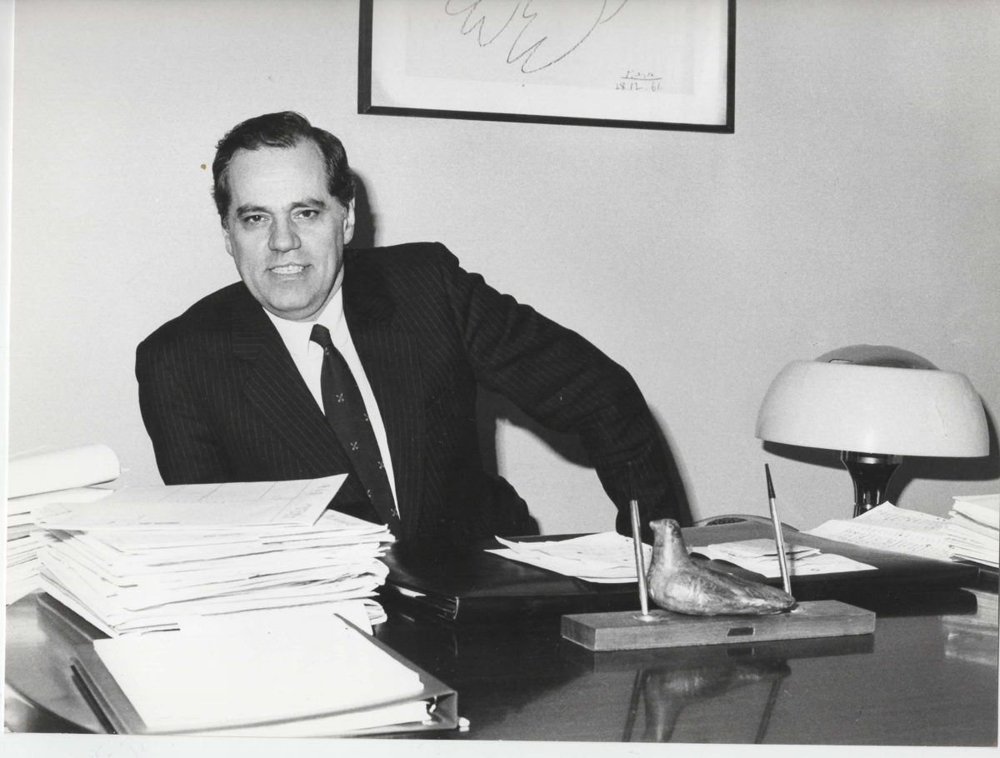
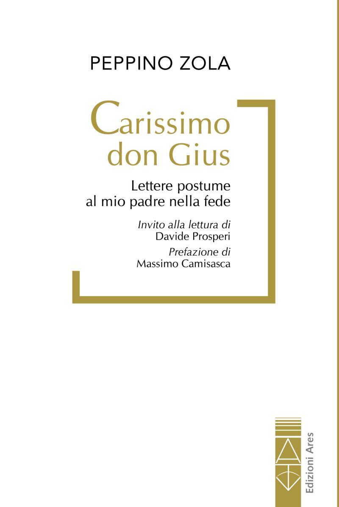
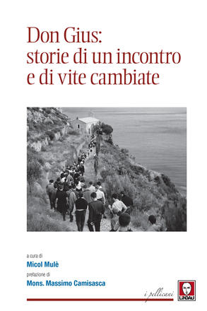
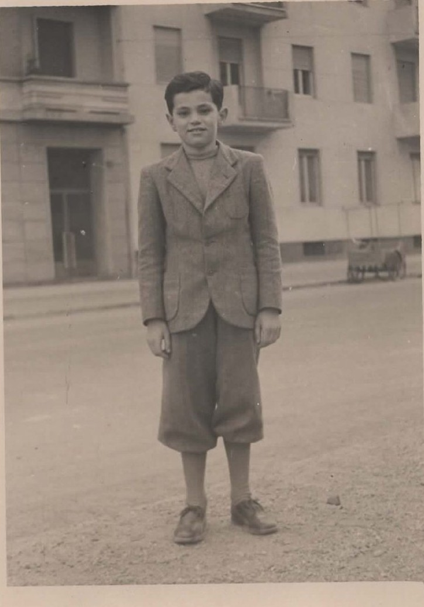
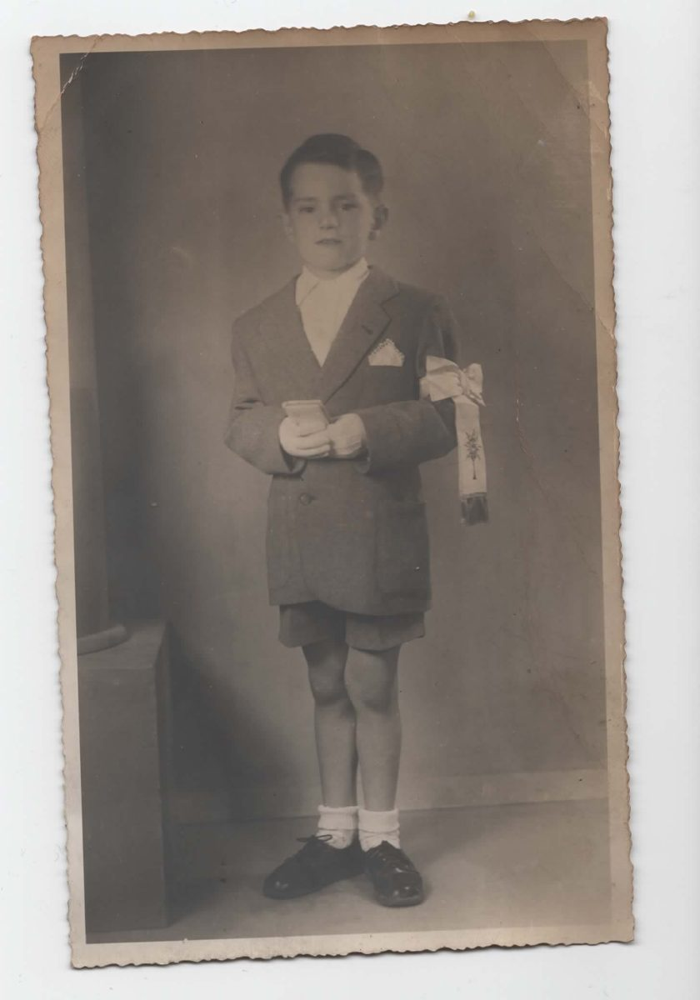
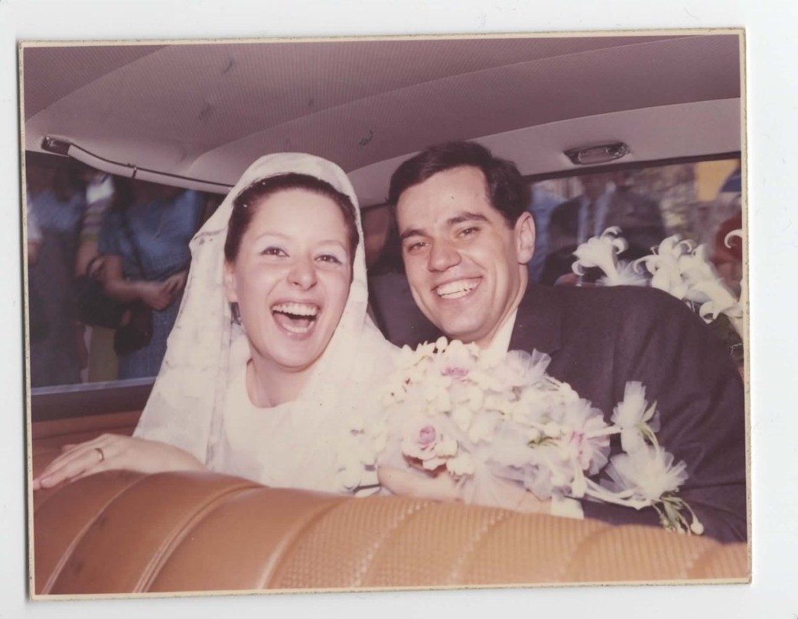
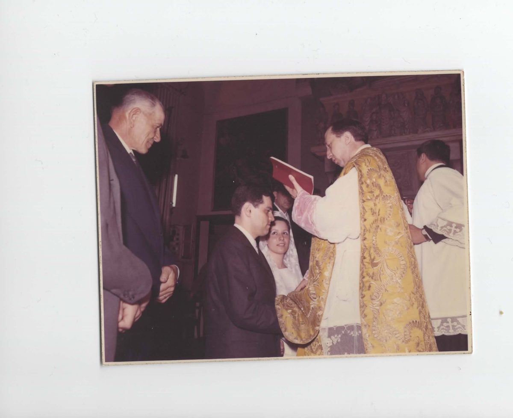
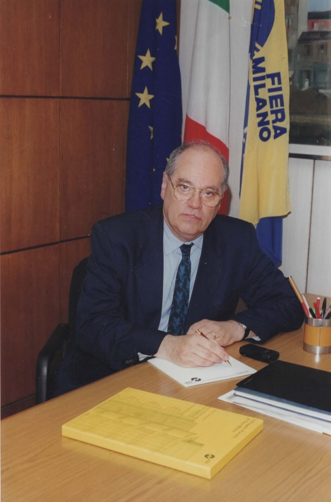
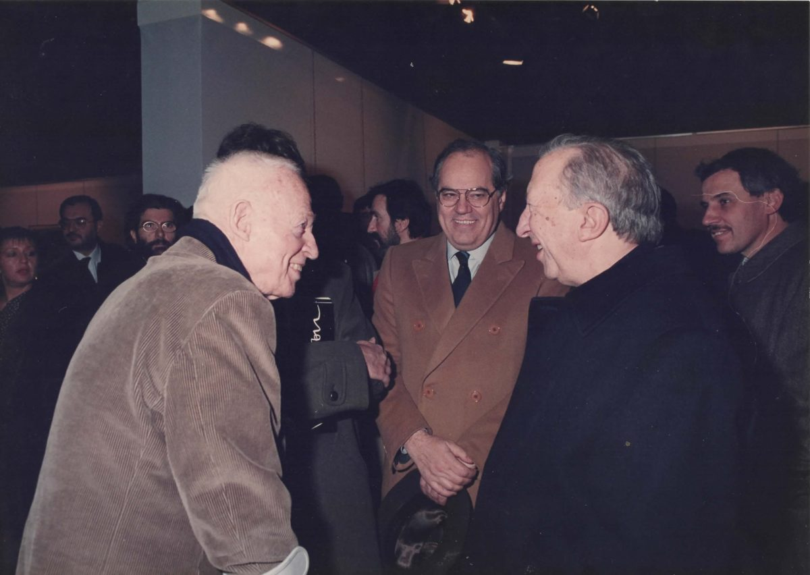

A cura di
Ho trovato quello che stavamo cercando
28 testimonianze sull'incontro con don Giussani (1954-1964). A cura di Robi Ronza e Peppino Zola. ISBN 978-88-16-30597-7.
Scheda del libroAvvocato milanese, amministratore pubblico e educatore. Dal Liceo Berchet all'incontro con don Giussani, dalla città di Milano alla Fiera, una storia di impegno lunga più di sessant'anni.

Peppino Zola — all'anagrafe Giuseppe Roberto Mario — nasce a Viverone, nel Biellese, il 30 aprile 1939. Nel 1947 la famiglia si trasferisce a Milano, dove il padre Angelo è per anni capo barman al Principe di Savoia e presidente dell'associazione nazionale e internazionale dei barmen.
Al Liceo Berchet, tra il 1955 e il 1958, incontra come insegnante di religione don Luigi Giussani: un incontro decisivo per tutta la vita, nell'appartenenza prima a Gioventù Studentesca e poi a Comunione e Liberazione. Nel 1963 si laurea in Giurisprudenza alla Statale di Milano con una tesi sulla Dichiarazione Universale dei Diritti dell'Uomo.
Dal 1967 al 2013 esercita la professione di avvocato; per alcuni anni è Vice Giudice Conciliatore a Milano. Nello stesso 1967 sposa Adriana Mascagni, autrice di alcuni tra i canti più cari alla storia di CL: nascono Giovanni, autore televisivo e scrittore, e Giuditta, dirigente scolastica.
La sua è una vita spesa per l'educazione e per la città. Nel 1971 è tra i fondatori della scuola La Zolla, che presiede per circa dieci anni. Dal 1980 al 1993 è consigliere comunale di Milano — 12.000 preferenze nel 1980, 23.000 nel 1985, 27.000 nel 1990 — con gli incarichi di assessore ai Servizi Sociali, pro-sindaco e vice-sindaco con delega alla Cultura.
Tra il 1999 e il 2001 presiede l'Ente Fiera Milano, avviando la riforma che porterà alla Fondazione Fiera Milano e al nuovo polo fieristico. Dal 2011 al 2014 è componente della sezione regionale di controllo della Corte dei conti per la Lombardia. Nel 2014, nonno di sette nipoti, fonda NONNI2.0. Nel 2026 pubblica «Carissimo don Gius» (Edizioni Ares).
Fondatore della scuola La Zolla (1971), del SIDEF – Sindacato delle Famiglie (1982) e di NONNI2.0 (2014).
Nasce a Viverone, nel Biellese
La famiglia si trasferisce a Milano
Liceo Berchet: l'incontro con don Giussani
Laurea in Giurisprudenza alla Statale di Milano
Ufficiale degli Alpini · Scuola Militare di Aosta
Avvocato · sposa Adriana Mascagni
Fonda la scuola La Zolla
Presidente del Consiglio Scolastico Provinciale di Milano
Consigliere comunale di Milano
Fonda il SIDEF – Sindacato delle Famiglie
Pro-sindaco e assessore ai Servizi Sociali
Vice-sindaco e assessore alla Cultura
Tra i responsabili di Comunione e Liberazione
Presidente dell'Ente Fiera Milano
Corte dei conti — Lombardia
Fonda NONNI2.0
Pubblica «Carissimo don Gius»

Una lunga lettera a don Luigi Giussani, il maestro incontrato al Liceo Berchet, per ripercorrere una vita di fede, amicizia e impegno.
Uscito nella fase diocesana della causa di beatificazione di Giussani.
Scheda del libro
28 testimonianze sull'incontro con don Giussani (1954-1964). A cura di Robi Ronza e Peppino Zola. ISBN 978-88-16-30597-7.
Scheda del libro
A cura di Micol Mulè, prefazione di mons. Massimo Camisasca. Peppino Zola è tra i 24 testimoni.
Scheda del libroEditorialista su temi di educazione, famiglia, natalità e vita pubblica. Una selezione dei suoi interventi:






Per informazioni, testimonianze o richieste è possibile scrivere a:
peppino.zola39@gmail.com